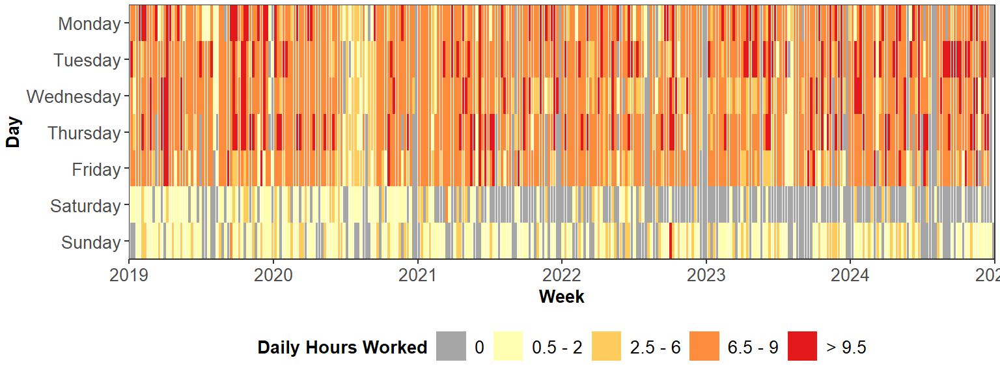
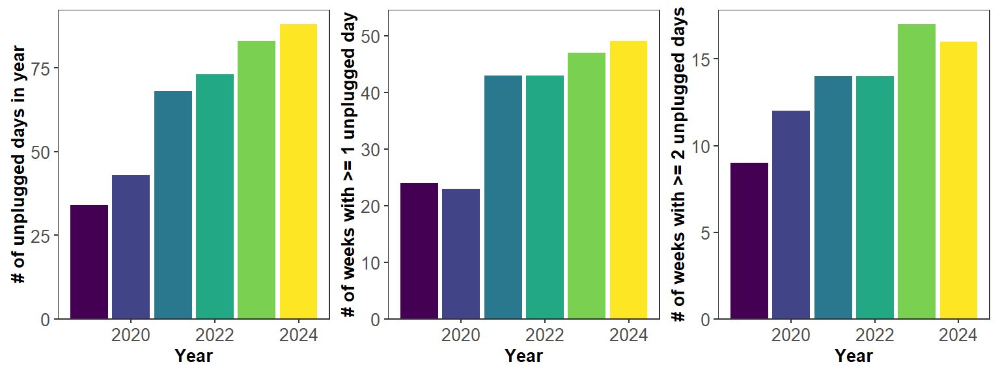
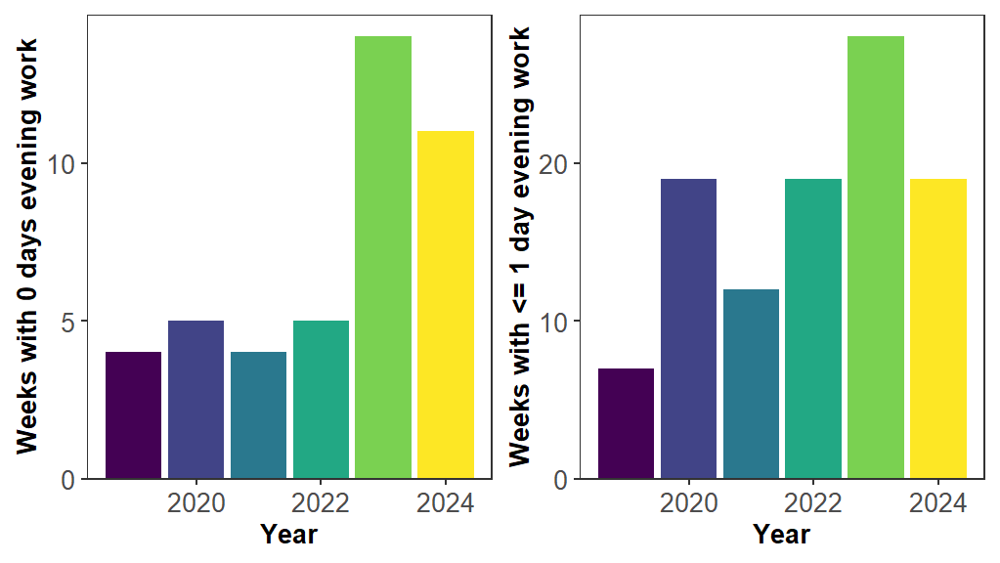
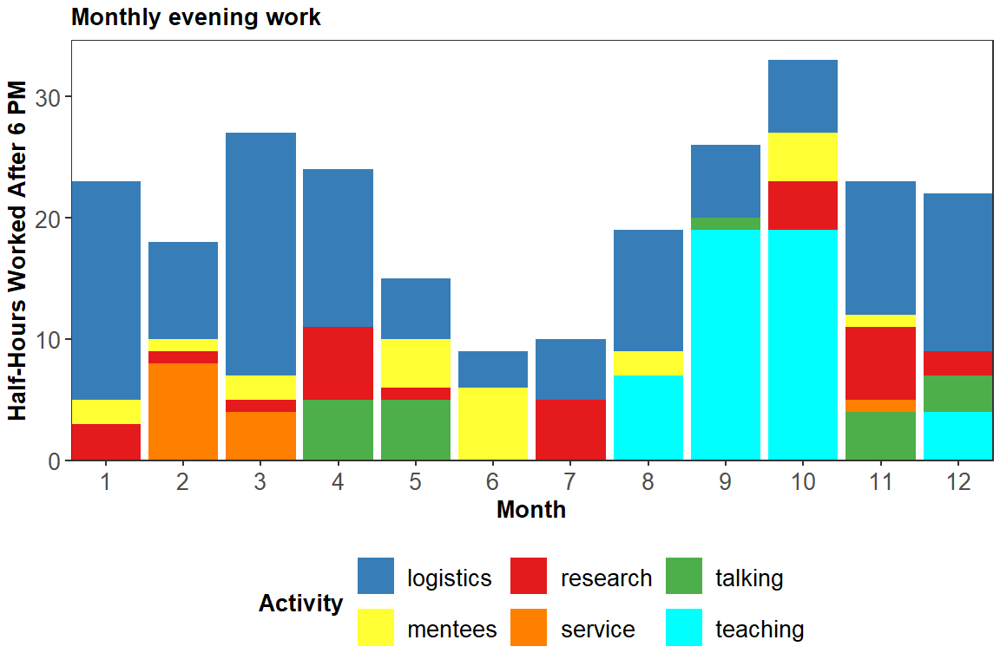
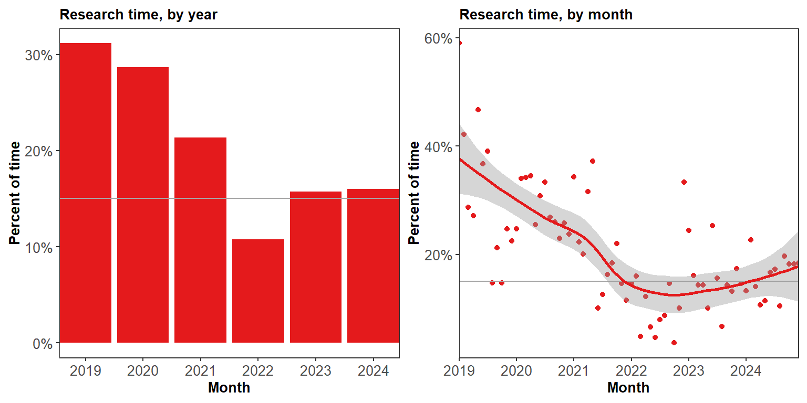
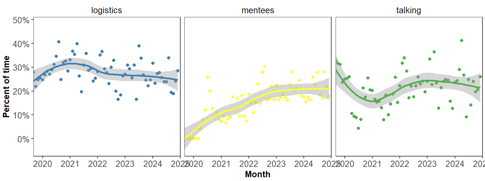
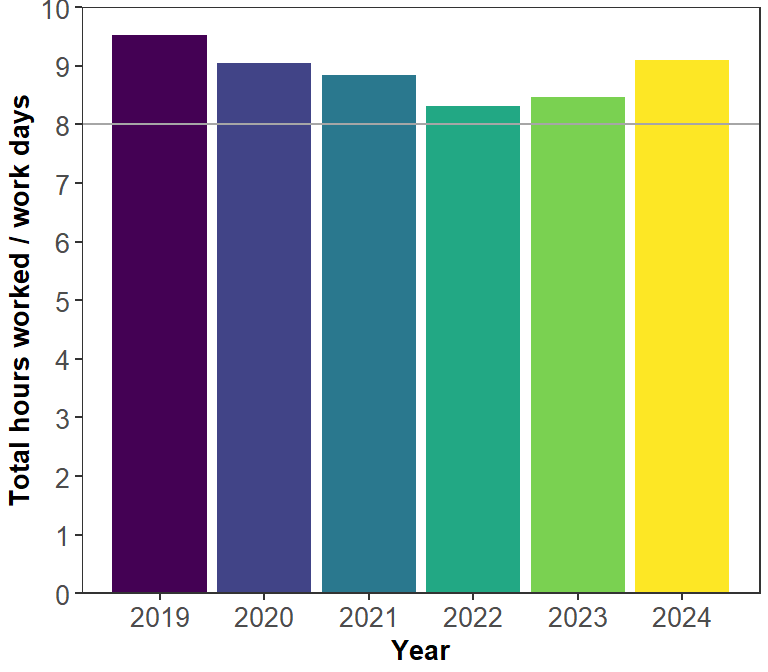
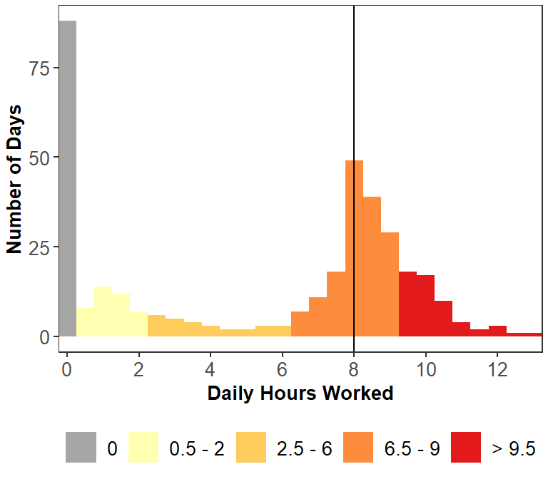

2024 work tracking update
Tracking my work and non-work time.
This is the fourth edition of my time tracking analysis, adding in the 2024 calendar year.
My goals, and associated metrics, for 2024 included:
- Unplug more: Maintain number of weeks with 1 unplugged day (no work including checking email) and increase number of weeks with 2 unplugged days.
- Sign off: Decrease weeks where I work in the evening more than 1 day.
- Increase research time: Keep percent of time spent on research at least 15%, with target of 20%.
I manually track the hours in a simple google sheet at 30 min resolution and divided into a few simple categories:
talking= things that involved other people… meetings, seminars, zoom calls, etc.logistics= stuff that is generally unimportant (but sometimes necessary). emails, expense reports, etc.research= writing proposals or papers, making presentations, data analysis, reading papers, etc.mentees= talking to or working with someone I am supervising such as a postdoc, student, or staff, including reviewing their workconference= anything at a conference/workshop.service= journal or grant reviews, committees, open science stuff, etc.teaching= courses/guest lectures, including prep time and grading
Past versions include:
Here’s what the full dataset looks like:
Within each day, the total hours are broken down by activity (not shown here).
Tracking 2024 Goals
Metric 1: More unplugged days
I was mostly successful here, with an overall increase in the number of unplugged days (from 83 in 2023 to 88 in 2024). At the weekly level, I increased the number of weeks with at least one unplugged day to 49 (approaching the theoretical maximum of 52 weeks) and had a marginal decrease in the number of weeks with 2 unplugged days (from 17 last year to 16 this year).

Within the year, days off were pretty well-distributed. The longest stretch of consecutive “plugged” days was 13, meaning there wasn’t any point where I didn’t unplug for 2 consecutive weeks.
Metric 2: Decrease evening work.
I had a backslide here, going from 28 weeks with <= 1 day/week with evening work in 2023 to 19 weeks in 2024, matching where I was in both 2020 and 2022. Looking at weeks with no evening work at all, I went from 14 last year to 11 weeks this year.

I mostly blame this on co-teaching an evening class during the fall 2024 semester, which led to a big chunk of hours during the weeks where I was lead instructor.

Metric 3: Research >15%
Overall, I was able to keep my research time at 16% in 2024, a slight increase from 15.7% in 2023. This continues an increase from its low point of 10.8% research time in 2022.

Looking at some other major categories:
- Logistics: Made some progress, ending at 25.5% in 2024, down from 27.2% in 2023. However, this is still the largest overall fraction of my time, followed closely by…
- Talking: Made it to 23.7% in 2024, up slightly from 23.3% in 2023. However, this category doesn’t include meetings with mentees, which are counted separately and are the third largest share of my time.
- Mentees: Time spent on mentees has plateaued at 20.1%, the same as last year. With a couple postdocs and a grad student finishing up in fall 2024, I’d anticipate this decreasing next year.
Here’s a look at the monthly trajectories for these categories.

Some other random observations
My typical weekly workload went up to a median of 43.5 hours in 2024 (compared to 40 hours in 2023). With the increase in hours, combined with the increase in unplugged days, this means that the average number of hours per workday is increasing for the second year in a row:

In 2024, it is up to 9.1 hours per workday, about where it was at in 2020.
This doesn’t mean I’m spending 9 hours in the office every weekday, but rather the amount of hours I’m working on non-work days combined with workdays averages out to 9 per workday. Across all days in 2024, my most common work length (apart from 0 on unplugged days) is right about 8 hours. Speculating about a few other patterns, the super long days (>11 hrs) tended to be associated with field work or conferences, the bump at around 1 hr is my typical Sunday afternoon weekly planning session, and the plateau at around 10 hrs is from teaching days this fall (for my night class, I ended up working ~7 hours in the day and then coming back for 3 hours at night).

Any updates for 2025?
I’m feeling pretty good about the way things are going overall. Long-term, I’d like to reduce the talking and logistics categories in order to get research to 20% (or beyond), but with my current project load this would be a stretch goal for 2025. I’m hoping it’s achievable in 2026 as long as I can wrap up some projects without new ones starting.
My specific 2025 goals are focused on maintaining and continued progress along most of the same dimensions as last year’s goal:
- Maintain 1/day week with no work every week.
- Get to 15 weeks with no evening work and 20 with <= 1 day of evening work.
- Keep research time above 15%.